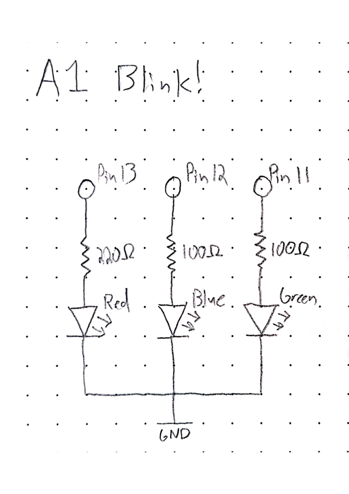
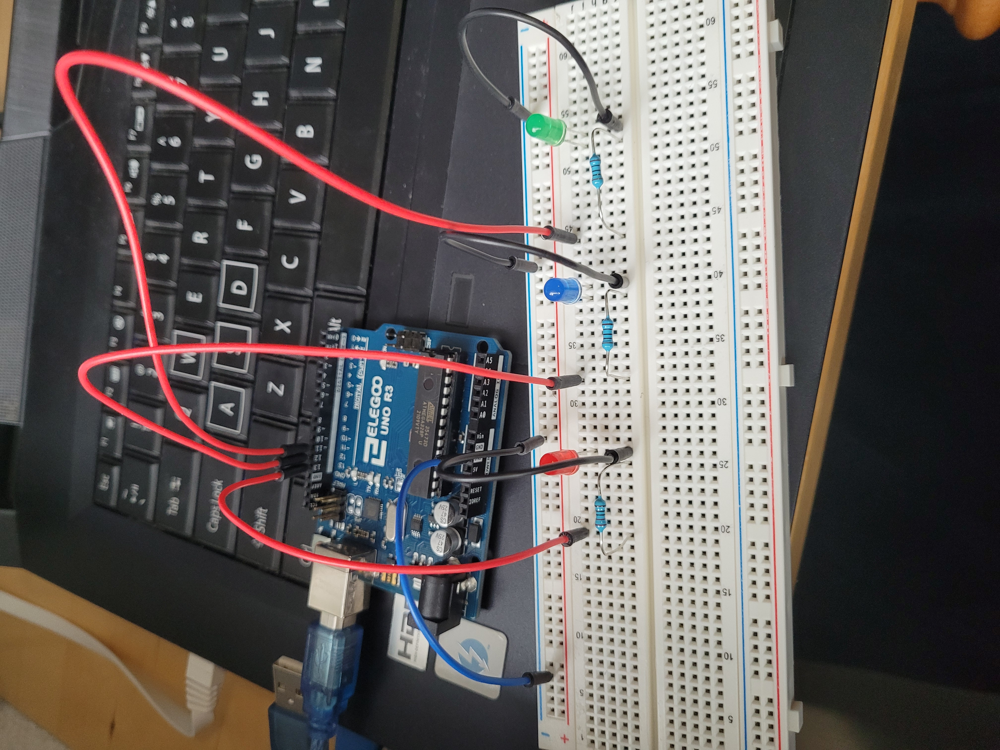

Isla's Assignment 1!


/*\n
Blink!\n
Turns off and on 3 LEDs over a 4 second loop. Red and Green\n
alternate every 1 second while Blue is on for the first 2 seconds.\n
\n
Isla Wisemore HCDE 439 Assignment 1 Blink!\n
*/\n
\n
// the setup function runs once when you press reset or power the board\n
void setup() {\n
// initialize digital pin LED_BUILTIN as an output.\n
pinMode(LED_BUILTIN, OUTPUT); // red LED\n
pinMode(12, OUTPUT); // blue LED\n
pinMode(11, OUTPUT); // green LED\n
}\n
\n
// the loop function runs over and over again forever\n
void loop() {\n
digitalWrite(LED_BUILTIN, HIGH); // red ON\n
digitalWrite(12, HIGH); // blue ON\n
digitalWrite(11, LOW); // green OFF\n
delay(1000); // wait 1 sec, 0:01\n
digitalWrite(LED_BUILTIN, LOW); // red OFF\n
digitalWrite(11, HIGH); // green ON\n
delay(1000); // wait 1 sec, 0:02\n
digitalWrite(LED_BUILTIN, HIGH); // red ON\n
digitalWrite(12, LOW); // blue OFF\n
digitalWrite(11, LOW); // green OFF\n
delay(1000); // wait 1 sec, 0:03\n
digitalWrite(LED_BUILTIN, LOW); // red OFF\n
digitalWrite(11, HIGH); // green ON\n
delay(1000); // wait 1 sec and loop\n
}\n

Here is all the documentation for assignment 1!